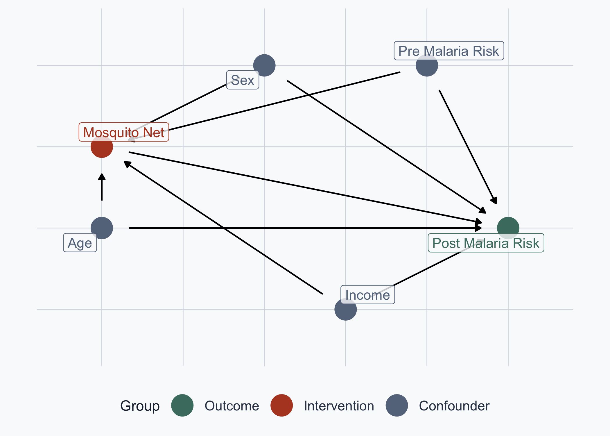

![]()
Show Code
# Observational DAG: confounders -> Net AND -> Post Malaria Risk
malaria_dag_obs <- dagify(
post_malaria_risk ~ net + age + sex + income + pre_malaria_risk,
net ~ age + sex + income + pre_malaria_risk,
exposure = "net",
outcome = "post_malaria_risk",
labels = c(post_malaria_risk = "Post Malaria Risk",
net = "Mosquito Net",
age = "Age", sex = "Sex",
income = "Income",
pre_malaria_risk = "Pre Malaria Risk"),
coords = list(
x = c(net = 2, post_malaria_risk = 7, income = 5,
age = 2, sex = 4, pre_malaria_risk = 6),
y = c(net = 3, post_malaria_risk = 2, income = 1,
age = 2, sex = 4, pre_malaria_risk = 4)
)
)
# Cleaning the DAG and turning it into a dataframe
df_obs <- data.frame(tidy_dagitty(malaria_dag_obs))
df_obs$type <- "Confounder"
df_obs$type[df_obs$name == "post_malaria_risk"] <- "Outcome"
df_obs$type[df_obs$name == "net"] <- "Intervention"
# Axis limits
min_lon_x <- min(df_obs$x, na.rm = TRUE)
max_lon_x <- max(df_obs$x, na.rm = TRUE)
min_lat_y <- min(df_obs$y, na.rm = TRUE)
max_lat_y <- max(df_obs$y, na.rm = TRUE)
error <- (max_lon_x - min_lon_x) / 10
# Producing the graph
dag_obs_plot <- ggplot(df_obs,
aes(x = x, y = y, xend = xend, yend = yend, color = type)) +
geom_dag_point(size = 8) +
geom_dag_edges() +
scale_colour_manual(values = dag_col, name = "Group",
breaks = dag_order) +
geom_label_repel(
data = subset(df_obs, !duplicated(df_obs$label)),
aes(label = label),
fill = alpha(cream, 0.8), size = 4,
show.legend = FALSE) +
coord_sf(xlim = c(min_lon_x - error, max_lon_x + error),
ylim = c(min_lat_y - error, max_lat_y + error)) +
labs(x = NULL, y = NULL) +
theme_meridian() +
theme(axis.text = element_blank(),
axis.line = element_blank(),
axis.ticks = element_blank(),
panel.grid = element_blank())
dag_obs_plot